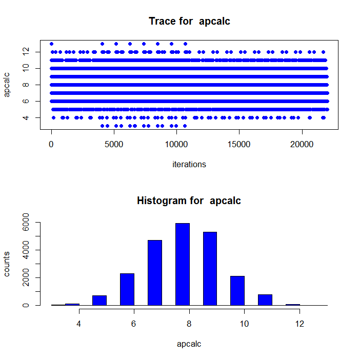
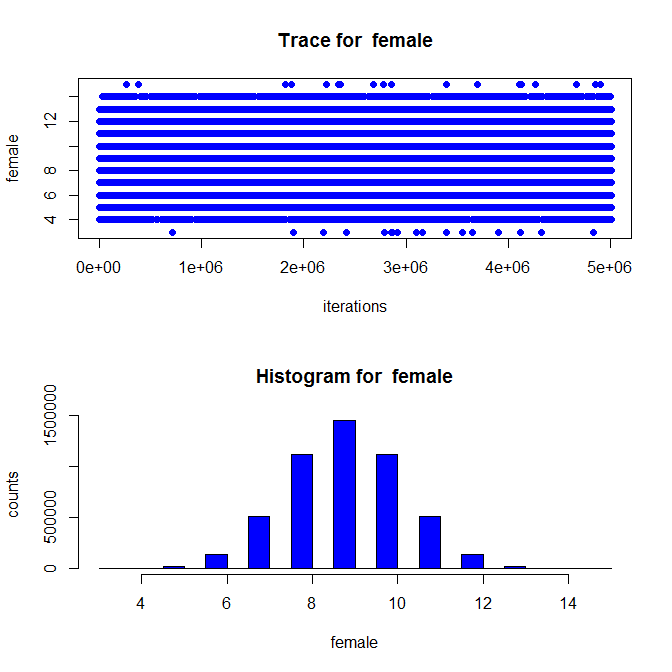
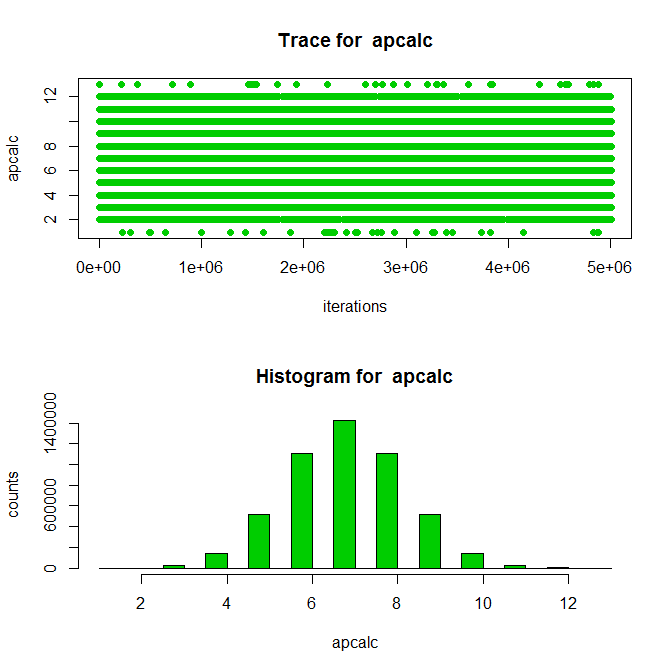

<!DOCTYPE html>
<html lang="en-US">

<!-- Mirrored from stats.oarc.ucla.edu/r/dae/exact-logistic-regression/ by HTTrack Website Copier/3.x [XR&CO'2014], Sat, 01 Mar 2025 04:12:04 GMT -->
<!-- Added by HTTrack --><meta http-equiv="content-type" content="text/html;charset=UTF-8" /><!-- /Added by HTTrack -->
<head >
<meta charset="UTF-8" />
<meta name="viewport" content="width=device-width, initial-scale=1" />
<meta name="viewport" content="width=device-width, initial-scale=1.0"/><title>Exact Logistic Regression |  R Data Analysis Examples</title>
<meta name='robots' content='max-image-preview:large' />
	<style>img:is([sizes="auto" i], [sizes^="auto," i]) { contain-intrinsic-size: 3000px 1500px }</style>
	
<script>
MathJax = {
  tex: {
    inlineMath: [['$','$'],['\\(','\\)']], 
    processEscapes: true
  },
  options: {
    ignoreHtmlClass: 'tex2jax_ignore|editor-rich-text'
  }
};

</script>
<link rel='dns-prefetch' href='../../../../cdn.jsdelivr.net/index.html' />
<link rel='dns-prefetch' href='../../../../platform-api.sharethis.com/index.html' />
<link rel="alternate" type="application/rss+xml" title="OARC Stats &raquo; Feed" href="../../../feed/index.html" />
<link rel="alternate" type="application/rss+xml" title="OARC Stats &raquo; Comments Feed" href="../../../comments/feed/index.html" />
<link rel="alternate" type="text/calendar" title="OARC Stats &raquo; iCal Feed" href="../../../calendar/indexedf3.html?ical=1" />
<link rel="canonical" href="index.html" />
<script type="text/javascript">
/* <![CDATA[ */
window._wpemojiSettings = {"baseUrl":"https:\/\/s.w.org\/images\/core\/emoji\/15.0.3\/72x72\/","ext":".png","svgUrl":"https:\/\/s.w.org\/images\/core\/emoji\/15.0.3\/svg\/","svgExt":".svg","source":{"concatemoji":"https:\/\/stats.oarc.ucla.edu\/wp-includes\/js\/wp-emoji-release.min.js?ver=6.7.1"}};
/*! This file is auto-generated */
!function(i,n){var o,s,e;function c(e){try{var t={supportTests:e,timestamp:(new Date).valueOf()};sessionStorage.setItem(o,JSON.stringify(t))}catch(e){}}function p(e,t,n){e.clearRect(0,0,e.canvas.width,e.canvas.height),e.fillText(t,0,0);var t=new Uint32Array(e.getImageData(0,0,e.canvas.width,e.canvas.height).data),r=(e.clearRect(0,0,e.canvas.width,e.canvas.height),e.fillText(n,0,0),new Uint32Array(e.getImageData(0,0,e.canvas.width,e.canvas.height).data));return t.every(function(e,t){return e===r[t]})}function u(e,t,n){switch(t){case"flag":return n(e,"\ud83c\udff3\ufe0f\u200d\u26a7\ufe0f","\ud83c\udff3\ufe0f\u200b\u26a7\ufe0f")?!1:!n(e,"\ud83c\uddfa\ud83c\uddf3","\ud83c\uddfa\u200b\ud83c\uddf3")&&!n(e,"\ud83c\udff4\udb40\udc67\udb40\udc62\udb40\udc65\udb40\udc6e\udb40\udc67\udb40\udc7f","\ud83c\udff4\u200b\udb40\udc67\u200b\udb40\udc62\u200b\udb40\udc65\u200b\udb40\udc6e\u200b\udb40\udc67\u200b\udb40\udc7f");case"emoji":return!n(e,"\ud83d\udc26\u200d\u2b1b","\ud83d\udc26\u200b\u2b1b")}return!1}function f(e,t,n){var r="undefined"!=typeof WorkerGlobalScope&&self instanceof WorkerGlobalScope?new OffscreenCanvas(300,150):i.createElement("canvas"),a=r.getContext("2d",{willReadFrequently:!0}),o=(a.textBaseline="top",a.font="600 32px Arial",{});return e.forEach(function(e){o[e]=t(a,e,n)}),o}function t(e){var t=i.createElement("script");t.src=e,t.defer=!0,i.head.appendChild(t)}"undefined"!=typeof Promise&&(o="wpEmojiSettingsSupports",s=["flag","emoji"],n.supports={everything:!0,everythingExceptFlag:!0},e=new Promise(function(e){i.addEventListener("DOMContentLoaded",e,{once:!0})}),new Promise(function(t){var n=function(){try{var e=JSON.parse(sessionStorage.getItem(o));if("object"==typeof e&&"number"==typeof e.timestamp&&(new Date).valueOf()<e.timestamp+604800&&"object"==typeof e.supportTests)return e.supportTests}catch(e){}return null}();if(!n){if("undefined"!=typeof Worker&&"undefined"!=typeof OffscreenCanvas&&"undefined"!=typeof URL&&URL.createObjectURL&&"undefined"!=typeof Blob)try{var e="postMessage("+f.toString()+"("+[JSON.stringify(s),u.toString(),p.toString()].join(",")+"));",r=new Blob([e],{type:"text/javascript"}),a=new Worker(URL.createObjectURL(r),{name:"wpTestEmojiSupports"});return void(a.onmessage=function(e){c(n=e.data),a.terminate(),t(n)})}catch(e){}c(n=f(s,u,p))}t(n)}).then(function(e){for(var t in e)n.supports[t]=e[t],n.supports.everything=n.supports.everything&&n.supports[t],"flag"!==t&&(n.supports.everythingExceptFlag=n.supports.everythingExceptFlag&&n.supports[t]);n.supports.everythingExceptFlag=n.supports.everythingExceptFlag&&!n.supports.flag,n.DOMReady=!1,n.readyCallback=function(){n.DOMReady=!0}}).then(function(){return e}).then(function(){var e;n.supports.everything||(n.readyCallback(),(e=n.source||{}).concatemoji?t(e.concatemoji):e.wpemoji&&e.twemoji&&(t(e.twemoji),t(e.wpemoji)))}))}((window,document),window._wpemojiSettings);
/* ]]> */
</script>
<link rel="stylesheet" href="../../../wp-content/cache/minify/9df84.css" media="all" />

<style id='wp-emoji-styles-inline-css' type='text/css'>

	img.wp-smiley, img.emoji {
		display: inline !important;
		border: none !important;
		box-shadow: none !important;
		height: 1em !important;
		width: 1em !important;
		margin: 0 0.07em !important;
		vertical-align: -0.1em !important;
		background: none !important;
		padding: 0 !important;
	}
</style>
<link rel="stylesheet" href="../../../wp-content/cache/minify/a5ff7.css" media="all" />

<style id='classic-theme-styles-inline-css' type='text/css'>
/*! This file is auto-generated */
.wp-block-button__link{color:#fff;background-color:#32373c;border-radius:9999px;box-shadow:none;text-decoration:none;padding:calc(.667em + 2px) calc(1.333em + 2px);font-size:1.125em}.wp-block-file__button{background:#32373c;color:#fff;text-decoration:none}
</style>
<style id='global-styles-inline-css' type='text/css'>
:root{--wp--preset--aspect-ratio--square: 1;--wp--preset--aspect-ratio--4-3: 4/3;--wp--preset--aspect-ratio--3-4: 3/4;--wp--preset--aspect-ratio--3-2: 3/2;--wp--preset--aspect-ratio--2-3: 2/3;--wp--preset--aspect-ratio--16-9: 16/9;--wp--preset--aspect-ratio--9-16: 9/16;--wp--preset--color--black: #000000;--wp--preset--color--cyan-bluish-gray: #abb8c3;--wp--preset--color--white: #ffffff;--wp--preset--color--pale-pink: #f78da7;--wp--preset--color--vivid-red: #cf2e2e;--wp--preset--color--luminous-vivid-orange: #ff6900;--wp--preset--color--luminous-vivid-amber: #fcb900;--wp--preset--color--light-green-cyan: #7bdcb5;--wp--preset--color--vivid-green-cyan: #00d084;--wp--preset--color--pale-cyan-blue: #8ed1fc;--wp--preset--color--vivid-cyan-blue: #0693e3;--wp--preset--color--vivid-purple: #9b51e0;--wp--preset--gradient--vivid-cyan-blue-to-vivid-purple: linear-gradient(135deg,rgba(6,147,227,1) 0%,rgb(155,81,224) 100%);--wp--preset--gradient--light-green-cyan-to-vivid-green-cyan: linear-gradient(135deg,rgb(122,220,180) 0%,rgb(0,208,130) 100%);--wp--preset--gradient--luminous-vivid-amber-to-luminous-vivid-orange: linear-gradient(135deg,rgba(252,185,0,1) 0%,rgba(255,105,0,1) 100%);--wp--preset--gradient--luminous-vivid-orange-to-vivid-red: linear-gradient(135deg,rgba(255,105,0,1) 0%,rgb(207,46,46) 100%);--wp--preset--gradient--very-light-gray-to-cyan-bluish-gray: linear-gradient(135deg,rgb(238,238,238) 0%,rgb(169,184,195) 100%);--wp--preset--gradient--cool-to-warm-spectrum: linear-gradient(135deg,rgb(74,234,220) 0%,rgb(151,120,209) 20%,rgb(207,42,186) 40%,rgb(238,44,130) 60%,rgb(251,105,98) 80%,rgb(254,248,76) 100%);--wp--preset--gradient--blush-light-purple: linear-gradient(135deg,rgb(255,206,236) 0%,rgb(152,150,240) 100%);--wp--preset--gradient--blush-bordeaux: linear-gradient(135deg,rgb(254,205,165) 0%,rgb(254,45,45) 50%,rgb(107,0,62) 100%);--wp--preset--gradient--luminous-dusk: linear-gradient(135deg,rgb(255,203,112) 0%,rgb(199,81,192) 50%,rgb(65,88,208) 100%);--wp--preset--gradient--pale-ocean: linear-gradient(135deg,rgb(255,245,203) 0%,rgb(182,227,212) 50%,rgb(51,167,181) 100%);--wp--preset--gradient--electric-grass: linear-gradient(135deg,rgb(202,248,128) 0%,rgb(113,206,126) 100%);--wp--preset--gradient--midnight: linear-gradient(135deg,rgb(2,3,129) 0%,rgb(40,116,252) 100%);--wp--preset--font-size--small: 13px;--wp--preset--font-size--medium: 20px;--wp--preset--font-size--large: 36px;--wp--preset--font-size--x-large: 42px;--wp--preset--spacing--20: 0.44rem;--wp--preset--spacing--30: 0.67rem;--wp--preset--spacing--40: 1rem;--wp--preset--spacing--50: 1.5rem;--wp--preset--spacing--60: 2.25rem;--wp--preset--spacing--70: 3.38rem;--wp--preset--spacing--80: 5.06rem;--wp--preset--shadow--natural: 6px 6px 9px rgba(0, 0, 0, 0.2);--wp--preset--shadow--deep: 12px 12px 50px rgba(0, 0, 0, 0.4);--wp--preset--shadow--sharp: 6px 6px 0px rgba(0, 0, 0, 0.2);--wp--preset--shadow--outlined: 6px 6px 0px -3px rgba(255, 255, 255, 1), 6px 6px rgba(0, 0, 0, 1);--wp--preset--shadow--crisp: 6px 6px 0px rgba(0, 0, 0, 1);}:where(.is-layout-flex){gap: 0.5em;}:where(.is-layout-grid){gap: 0.5em;}body .is-layout-flex{display: flex;}.is-layout-flex{flex-wrap: wrap;align-items: center;}.is-layout-flex > :is(*, div){margin: 0;}body .is-layout-grid{display: grid;}.is-layout-grid > :is(*, div){margin: 0;}:where(.wp-block-columns.is-layout-flex){gap: 2em;}:where(.wp-block-columns.is-layout-grid){gap: 2em;}:where(.wp-block-post-template.is-layout-flex){gap: 1.25em;}:where(.wp-block-post-template.is-layout-grid){gap: 1.25em;}.has-black-color{color: var(--wp--preset--color--black) !important;}.has-cyan-bluish-gray-color{color: var(--wp--preset--color--cyan-bluish-gray) !important;}.has-white-color{color: var(--wp--preset--color--white) !important;}.has-pale-pink-color{color: var(--wp--preset--color--pale-pink) !important;}.has-vivid-red-color{color: var(--wp--preset--color--vivid-red) !important;}.has-luminous-vivid-orange-color{color: var(--wp--preset--color--luminous-vivid-orange) !important;}.has-luminous-vivid-amber-color{color: var(--wp--preset--color--luminous-vivid-amber) !important;}.has-light-green-cyan-color{color: var(--wp--preset--color--light-green-cyan) !important;}.has-vivid-green-cyan-color{color: var(--wp--preset--color--vivid-green-cyan) !important;}.has-pale-cyan-blue-color{color: var(--wp--preset--color--pale-cyan-blue) !important;}.has-vivid-cyan-blue-color{color: var(--wp--preset--color--vivid-cyan-blue) !important;}.has-vivid-purple-color{color: var(--wp--preset--color--vivid-purple) !important;}.has-black-background-color{background-color: var(--wp--preset--color--black) !important;}.has-cyan-bluish-gray-background-color{background-color: var(--wp--preset--color--cyan-bluish-gray) !important;}.has-white-background-color{background-color: var(--wp--preset--color--white) !important;}.has-pale-pink-background-color{background-color: var(--wp--preset--color--pale-pink) !important;}.has-vivid-red-background-color{background-color: var(--wp--preset--color--vivid-red) !important;}.has-luminous-vivid-orange-background-color{background-color: var(--wp--preset--color--luminous-vivid-orange) !important;}.has-luminous-vivid-amber-background-color{background-color: var(--wp--preset--color--luminous-vivid-amber) !important;}.has-light-green-cyan-background-color{background-color: var(--wp--preset--color--light-green-cyan) !important;}.has-vivid-green-cyan-background-color{background-color: var(--wp--preset--color--vivid-green-cyan) !important;}.has-pale-cyan-blue-background-color{background-color: var(--wp--preset--color--pale-cyan-blue) !important;}.has-vivid-cyan-blue-background-color{background-color: var(--wp--preset--color--vivid-cyan-blue) !important;}.has-vivid-purple-background-color{background-color: var(--wp--preset--color--vivid-purple) !important;}.has-black-border-color{border-color: var(--wp--preset--color--black) !important;}.has-cyan-bluish-gray-border-color{border-color: var(--wp--preset--color--cyan-bluish-gray) !important;}.has-white-border-color{border-color: var(--wp--preset--color--white) !important;}.has-pale-pink-border-color{border-color: var(--wp--preset--color--pale-pink) !important;}.has-vivid-red-border-color{border-color: var(--wp--preset--color--vivid-red) !important;}.has-luminous-vivid-orange-border-color{border-color: var(--wp--preset--color--luminous-vivid-orange) !important;}.has-luminous-vivid-amber-border-color{border-color: var(--wp--preset--color--luminous-vivid-amber) !important;}.has-light-green-cyan-border-color{border-color: var(--wp--preset--color--light-green-cyan) !important;}.has-vivid-green-cyan-border-color{border-color: var(--wp--preset--color--vivid-green-cyan) !important;}.has-pale-cyan-blue-border-color{border-color: var(--wp--preset--color--pale-cyan-blue) !important;}.has-vivid-cyan-blue-border-color{border-color: var(--wp--preset--color--vivid-cyan-blue) !important;}.has-vivid-purple-border-color{border-color: var(--wp--preset--color--vivid-purple) !important;}.has-vivid-cyan-blue-to-vivid-purple-gradient-background{background: var(--wp--preset--gradient--vivid-cyan-blue-to-vivid-purple) !important;}.has-light-green-cyan-to-vivid-green-cyan-gradient-background{background: var(--wp--preset--gradient--light-green-cyan-to-vivid-green-cyan) !important;}.has-luminous-vivid-amber-to-luminous-vivid-orange-gradient-background{background: var(--wp--preset--gradient--luminous-vivid-amber-to-luminous-vivid-orange) !important;}.has-luminous-vivid-orange-to-vivid-red-gradient-background{background: var(--wp--preset--gradient--luminous-vivid-orange-to-vivid-red) !important;}.has-very-light-gray-to-cyan-bluish-gray-gradient-background{background: var(--wp--preset--gradient--very-light-gray-to-cyan-bluish-gray) !important;}.has-cool-to-warm-spectrum-gradient-background{background: var(--wp--preset--gradient--cool-to-warm-spectrum) !important;}.has-blush-light-purple-gradient-background{background: var(--wp--preset--gradient--blush-light-purple) !important;}.has-blush-bordeaux-gradient-background{background: var(--wp--preset--gradient--blush-bordeaux) !important;}.has-luminous-dusk-gradient-background{background: var(--wp--preset--gradient--luminous-dusk) !important;}.has-pale-ocean-gradient-background{background: var(--wp--preset--gradient--pale-ocean) !important;}.has-electric-grass-gradient-background{background: var(--wp--preset--gradient--electric-grass) !important;}.has-midnight-gradient-background{background: var(--wp--preset--gradient--midnight) !important;}.has-small-font-size{font-size: var(--wp--preset--font-size--small) !important;}.has-medium-font-size{font-size: var(--wp--preset--font-size--medium) !important;}.has-large-font-size{font-size: var(--wp--preset--font-size--large) !important;}.has-x-large-font-size{font-size: var(--wp--preset--font-size--x-large) !important;}
:where(.wp-block-post-template.is-layout-flex){gap: 1.25em;}:where(.wp-block-post-template.is-layout-grid){gap: 1.25em;}
:where(.wp-block-columns.is-layout-flex){gap: 2em;}:where(.wp-block-columns.is-layout-grid){gap: 2em;}
:root :where(.wp-block-pullquote){font-size: 1.5em;line-height: 1.6;}
</style>
<link rel="stylesheet" href="../../../wp-content/cache/minify/4c431.css" media="all" />

<style id='contact-form-7-inline-css' type='text/css'>
.wpcf7 .wpcf7-recaptcha iframe {margin-bottom: 0;}.wpcf7 .wpcf7-recaptcha[data-align="center"] > div {margin: 0 auto;}.wpcf7 .wpcf7-recaptcha[data-align="right"] > div {margin: 0 0 0 auto;}
</style>
<link rel="stylesheet" href="../../../wp-content/cache/minify/4033d.css" media="all" />


<link rel='stylesheet' id='slicknavcss-css' href='../../../../cdn.jsdelivr.net/jquery.slicknav/0.1/slicknav.css?ver=1' type='text/css' media='all' />
<script  src="../../../wp-content/cache/minify/818c0.js"></script>


<script type="text/javascript" src="../../../../cdn.jsdelivr.net/jquery.slicknav/0.1/jquery.slicknav.min.js?ver=1" id="slicknav-js"></script>
<script type="text/javascript" src="../../../../platform-api.sharethis.com/js/sharethis.js#source=googleanalytics-wordpress#product=ga&amp;property=5b058eb03e4a630011ba71c0" id="googleanalytics-platform-sharethis-js"></script>
<link rel="https://api.w.org/" href="../../../wp-json/index.html" /><link rel="alternate" title="JSON" type="application/json" href="../../../wp-json/wp/v2/pages/919.json" /><link rel="EditURI" type="application/rsd+xml" title="RSD" href="../../../xmlrpc0db0.html?rsd" />
<link rel="alternate" title="oEmbed (JSON)" type="application/json+oembed" href="../../../wp-json/oembed/1.0/embed3f94.json?url=https%3A%2F%2Fstats.oarc.ucla.edu%2Fr%2Fdae%2Fexact-logistic-regression%2F" />
<link rel="alternate" title="oEmbed (XML)" type="text/xml+oembed" href="../../../wp-json/oembed/1.0/embed2ddf?url=https%3A%2F%2Fstats.oarc.ucla.edu%2Fr%2Fdae%2Fexact-logistic-regression%2F&amp;format=xml" />
<meta name="tec-api-version" content="v1"><meta name="tec-api-origin" content="https://stats.oarc.ucla.edu"><link rel="alternate" href="../../../wp-json/tribe/events/v1/index.html" /><link rel="icon" href="../../../wp-content/themes/genesis-child/images/favicon.ico" />
<link rel="pingback" href="../../../xmlrpc.html" />
<script>
(function() {
	(function (i, s, o, g, r, a, m) {
		i['GoogleAnalyticsObject'] = r;
		i[r] = i[r] || function () {
				(i[r].q = i[r].q || []).push(arguments)
			}, i[r].l = 1 * new Date();
		a = s.createElement(o),
			m = s.getElementsByTagName(o)[0];
		a.async = 1;
		a.src = g;
		m.parentNode.insertBefore(a, m)
	})(window, document, 'script', '../../../../google-analytics.com/analytics.js', 'ga');

	ga('create', 'UA-121222866-1', 'auto');
			ga('send', 'pageview');
	})();
</script>

<link rel="icon" href="../../../wp-includes/images/w-logo-blue-white-bg.png" type="image/x-icon" />
<link rel="shortcut icon" href="../../../wp-includes/images/w-logo-blue-white-bg.png" type="image/x-icon" />

</head>

<body class="page-template-default page page-id-919 page-child parent-pageid-916 tribe-no-js header-image content-sidebar genesis-breadcrumbs-hidden genesis-footer-widgets-hidden" itemscope itemtype="https://schema.org/WebPage"><div class="site-container"><ul class="genesis-skip-link"><li><a href="#genesis-nav-primary" class="screen-reader-shortcut"> Skip to primary navigation</a></li><li><a href="#genesis-content" class="screen-reader-shortcut"> Skip to main content</a></li><li><a href="#genesis-sidebar-primary" class="screen-reader-shortcut"> Skip to primary sidebar</a></li></ul><header class="site-header" itemscope itemtype="https://schema.org/WPHeader"><div class="wrap"><div class="title-area">	<div class="title-area">

	<div class="site-title" itemprop="headline"><a href="https://stats.oarc.ucla.edu/">stats.oarc.ucla.edu</a></div>

	<p class="site-description" itemprop="description">Statistical Methods and Data Analytics</p></div>
</div><div class="widget-area header-widget-area"><section id="custom_html-7" class="widget_text widget widget_custom_html"><div class="widget_text widget-wrap"><div class="textwidget custom-html-widget"><div><div class = "top-wrap"><div id = "ucla-logo"></div></div>
</div></div></div></section>
<section id="search-11" class="widget widget_search"><div class="widget-wrap"><form class="search-form" method="get" action="https://stats.oarc.ucla.edu/" role="search" itemprop="potentialAction" itemscope itemtype="https://schema.org/SearchAction"><label class="search-form-label screen-reader-text" for="searchform-1">Search this website</label><input class="search-form-input" type="search" name="s" id="searchform-1" placeholder="Search this website" itemprop="query-input"><input class="search-form-submit" type="submit" value="Search"><meta content="https://stats.oarc.ucla.edu/?s={s}" itemprop="target"></form></div></section>
</div></div></header><nav class="nav-primary" aria-label="Main" itemscope itemtype="https://schema.org/SiteNavigationElement" id="genesis-nav-primary"><div class="wrap"><ul id="menu-idre-stats-navigation-menu" class="menu genesis-nav-menu menu-primary js-superfish"><li id="menu-item-22640" class="menu-item menu-item-type-custom menu-item-object-custom menu-item-22640"><a href="https://stats.oarc.ucla.edu/" itemprop="url"><span itemprop="name">HOME</span></a></li>
<li id="menu-item-22662" class="menu-item menu-item-type-custom menu-item-object-custom menu-item-has-children menu-item-22662"><a href="#" itemprop="url"><span itemprop="name">SOFTWARE</span></a>
<ul class="sub-menu">
	<li id="menu-item-22646" class="menu-item menu-item-type-custom menu-item-object-custom menu-item-22646"><a href="../../index.html" itemprop="url"><span itemprop="name">R</span></a></li>
	<li id="menu-item-22649" class="menu-item menu-item-type-custom menu-item-object-custom menu-item-22649"><a href="https://stats.oarc.ucla.edu/stata/" itemprop="url"><span itemprop="name">Stata</span></a></li>
	<li id="menu-item-22647" class="menu-item menu-item-type-custom menu-item-object-custom menu-item-22647"><a href="https://stats.oarc.ucla.edu/sas/" itemprop="url"><span itemprop="name">SAS</span></a></li>
	<li id="menu-item-22648" class="menu-item menu-item-type-custom menu-item-object-custom menu-item-22648"><a href="https://stats.oarc.ucla.edu/spss/" itemprop="url"><span itemprop="name">SPSS</span></a></li>
	<li id="menu-item-22659" class="menu-item menu-item-type-custom menu-item-object-custom menu-item-22659"><a href="https://stats.oarc.ucla.edu/mplus/" itemprop="url"><span itemprop="name">Mplus</span></a></li>
	<li id="menu-item-22657" class="menu-item menu-item-type-custom menu-item-object-custom menu-item-has-children menu-item-22657"><a href="https://stats.oarc.ucla.edu/other/" itemprop="url"><span itemprop="name">Other Packages</span></a>
	<ul class="sub-menu">
		<li id="menu-item-22658" class="menu-item menu-item-type-custom menu-item-object-custom menu-item-22658"><a href="https://stats.oarc.ucla.edu/other/gpower/" itemprop="url"><span itemprop="name">G*Power</span></a></li>
		<li id="menu-item-22684" class="menu-item menu-item-type-custom menu-item-object-custom menu-item-22684"><a href="https://stats.oarc.ucla.edu/other/sudaan/" itemprop="url"><span itemprop="name">SUDAAN</span></a></li>
		<li id="menu-item-22696" class="menu-item menu-item-type-post_type menu-item-object-page menu-item-22696"><a href="https://stats.oarc.ucla.edu/spss/spss-user/sample-power/" itemprop="url"><span itemprop="name">Sample Power</span></a></li>
	</ul>
</li>
</ul>
</li>
<li id="menu-item-22661" class="menu-item menu-item-type-custom menu-item-object-custom menu-item-has-children menu-item-22661"><a href="https://stats.oarc.ucla.edu/" itemprop="url"><span itemprop="name">RESOURCES</span></a>
<ul class="sub-menu">
	<li id="menu-item-22656" class="menu-item menu-item-type-custom menu-item-object-custom menu-item-22656"><a href="https://stats.oarc.ucla.edu/annotatedoutput" itemprop="url"><span itemprop="name">Annotated Output</span></a></li>
	<li id="menu-item-22651" class="menu-item menu-item-type-custom menu-item-object-custom menu-item-22651"><a href="../../../other/dae/index.html" itemprop="url"><span itemprop="name">Data Analysis Examples</span></a></li>
	<li id="menu-item-22654" class="menu-item menu-item-type-custom menu-item-object-custom menu-item-22654"><a href="https://stats.oarc.ucla.edu/other/mult-pkg/faq/" itemprop="url"><span itemprop="name">Frequently Asked Questions</span></a></li>
	<li id="menu-item-22652" class="menu-item menu-item-type-custom menu-item-object-custom menu-item-22652"><a href="https://stats.oarc.ucla.edu/other/mult-pkg/seminars/" itemprop="url"><span itemprop="name">Seminars</span></a></li>
	<li id="menu-item-22653" class="menu-item menu-item-type-custom menu-item-object-custom menu-item-22653"><a href="https://stats.oarc.ucla.edu/other/examples/" itemprop="url"><span itemprop="name">Textbook Examples</span></a></li>
	<li id="menu-item-22692" class="menu-item menu-item-type-custom menu-item-object-custom menu-item-22692"><a href="https://stats.oarc.ucla.edu/other/mult-pkg/whatstat/" itemprop="url"><span itemprop="name">Which Statistical Test?</span></a></li>
</ul>
</li>
<li id="menu-item-22663" class="menu-item menu-item-type-custom menu-item-object-custom menu-item-has-children menu-item-22663"><a href="https://stats.oarc.ucla.edu/" itemprop="url"><span itemprop="name">SERVICES</span></a>
<ul class="sub-menu">
	<li id="menu-item-33775" class="menu-item menu-item-type-custom menu-item-object-custom menu-item-33775"><a href="https://stats.idre.ucla.edu/ucla/policies/remote" itemprop="url"><span itemprop="name">Remote Consulting</span></a></li>
	<li id="menu-item-22655" class="menu-item menu-item-type-custom menu-item-object-custom menu-item-has-children menu-item-22655"><a href="https://stats.oarc.ucla.edu/ucla/policies" itemprop="url"><span itemprop="name">Services and Policies</span></a>
	<ul class="sub-menu">
		<li id="menu-item-22885" class="menu-item menu-item-type-custom menu-item-object-custom menu-item-22885"><a href="https://stats.oarc.ucla.edu/ucla/policies/#WalkIn" itemprop="url"><span itemprop="name">Walk-In Consulting</span></a></li>
		<li id="menu-item-22882" class="menu-item menu-item-type-custom menu-item-object-custom menu-item-22882"><a href="https://stats.oarc.ucla.edu/ucla/policies/#EmailConsult" itemprop="url"><span itemprop="name">Email Consulting</span></a></li>
		<li id="menu-item-22880" class="menu-item menu-item-type-custom menu-item-object-custom menu-item-22880"><a href="https://stats.oarc.ucla.edu/ucla/policies/#Fee" itemprop="url"><span itemprop="name">Fee for Service</span></a></li>
		<li id="menu-item-30604" class="menu-item menu-item-type-custom menu-item-object-custom menu-item-30604"><a href="https://stats.idre.ucla.edu/ucla/frequently-asked-questions-about-our-statistical-consulting-services/" itemprop="url"><span itemprop="name">FAQ</span></a></li>
	</ul>
</li>
	<li id="menu-item-22687" class="menu-item menu-item-type-custom menu-item-object-custom menu-item-22687"><a href="https://stats.oarc.ucla.edu/purchasing-and-updatingstatistical-software-packages/" itemprop="url"><span itemprop="name">Software Purchasing and Updating</span></a></li>
	<li id="menu-item-22688" class="menu-item menu-item-type-custom menu-item-object-custom menu-item-22688"><a href="https://stats.oarc.ucla.edu/statistical-consultants-for-hire/" itemprop="url"><span itemprop="name">Consultants for Hire</span></a></li>
	<li id="menu-item-23684" class="menu-item menu-item-type-custom menu-item-object-custom menu-item-has-children menu-item-23684"><a itemprop="url"><span itemprop="name">Other Consulting Centers</span></a>
	<ul class="sub-menu">
		<li id="menu-item-23685" class="menu-item menu-item-type-custom menu-item-object-custom menu-item-23685"><a href="http://scc.stat.ucla.edu/" itemprop="url"><span itemprop="name">Department of Statistics Consulting Center</span></a></li>
		<li id="menu-item-23686" class="menu-item menu-item-type-custom menu-item-object-custom menu-item-23686"><a href="https://www.cores.ucla.edu/statistical-biomathematical-consulting-clinic-sbcc/" itemprop="url"><span itemprop="name">Department of Biomathematics Consulting Clinic</span></a></li>
	</ul>
</li>
</ul>
</li>
<li id="menu-item-22664" class="menu-item menu-item-type-custom menu-item-object-custom menu-item-22664"><a href="https://stats.oarc.ucla.edu/ucla/about" itemprop="url"><span itemprop="name">ABOUT US</span></a></li>
</ul></div></nav><div class="site-inner"><div class="content-sidebar-wrap"><main class="content" id="genesis-content"><article class="post-919 page type-page status-publish entry" aria-label="Exact Logistic Regression |  R Data Analysis Examples" itemscope itemtype="https://schema.org/CreativeWork"><header class="entry-header"><h1 class="entry-title" itemprop="headline">Exact Logistic Regression |  R Data Analysis Examples</h1>
</header><div class="entry-content" itemprop="text"><p>Exact logistic regression is used to model binary outcome variables in which the
log odds of the outcome is modeled as a linear combination of the predictor
variables. It is used when the sample size is too small for a regular
logistic regression (which uses the standard maximum-likelihood-based estimator)
and/or when some of the cells formed by the outcome and
categorical predictor variable have no observations. The estimates given
by exact logistic regression do not depend on asymptotic results.</p>
<p>This page uses the following packages. Make sure that you can load
them before trying to run the examples on this page. If you do not have
a package installed, run: <code>install.packages("packagename")</code>, or
if you see the version is out of date, run: <code>update.packages()</code>.</p>
<div id="unnamed-chunk-2" class="chunk">
<div class="rcode">
<div class="source">
<pre class="knitr r"><span class="hl kwd">require</span>(elrm)
</pre>
</div>
</div>
</div>
<p><code class="knitr inline"><strong>Version info: </strong>Code for this page was tested in R version 3.0.1 (2013-05-16)
On: 2013-08-06
With: elrm 1.2.1; coda 0.16-1; lattice 0.20-15; knitr 1.3
</code></p>
<p><strong>Please note:</strong> The purpose of this page is to show how to use various data
analysis commands. It does not cover all aspects of the research process which
researchers are expected to do. In particular, it does not cover data
cleaning and checking, verification of assumptions, model diagnostics or
potential follow-up analyses.</p>
<h2>Example of exact logistic regression</h2>
<p>Suppose that we are interested in the factors
that influence whether or not a high school senior is admitted into a very competitive
engineering school. The outcome variable is binary (0/1): admit or not admit.
The predictor variables of interest include student gender and whether or not the
student took Advanced Placement calculus in high school. Because the response variable is binary, we need
to use a model that handles 0/1 outcome variables correctly. Also, because of the number of students
involved is small, we will need a procedure that can perform the estimation with
a small sample size.</p>
<h2>Description of the data</h2>
<p>The data for this exact logistic data analysis include the number of students admitted, the total
number of applicants broken down by gender (the variable <code>female</code>), and whether or not
they had taken AP calculus (the variable <code>apcalc</code>). Since the dataset is so small,
we will read it in directly.</p>
<div id="unnamed-chunk-3" class="chunk">
<div class="rcode">
<div class="source">
<pre class="knitr r">dat &lt;- <span class="hl kwd">read.table</span>(text = "
female  apcalc    admit       num
0        0        0         7
0        0        1         1
0        1        0         3
0        1        1         7
1        0        0         5
1        0        1         1
1        1        0         0
1        1        1         6",
  header = <span class="hl kwa">TRUE</span>)
</pre>
</div>
</div>
</div>
<p>The <code>num</code> variable indicates frequency weight. We use this to expand the dataset and
then look at some frequency tables.</p>
<div id="unnamed-chunk-4" class="chunk">
<div class="rcode">
<div class="source">
<pre class="knitr r"><span class="hl com">## expand dataset by repeating each row num times and drop the num</span>
<span class="hl com">## variable</span>
dat &lt;- dat[<span class="hl kwd">rep</span>(1:<span class="hl kwd">nrow</span>(dat), dat$num), -4]

<span class="hl com">## look at various tables</span>
<span class="hl kwd">xtabs</span>(~female + apcalc, data = dat)
</pre>
</div>
<div class="output">
<pre class="knitr r">##       apcalc
## female  0  1
##      0  8 10
##      1  6  6
</pre>
</div>
<div class="source">
<pre class="knitr r"><span class="hl kwd">xtabs</span>(~female + admit, data = dat)
</pre>
</div>
<div class="output">
<pre class="knitr r">##       admit
## female  0  1
##      0 10  8
##      1  5  7
</pre>
</div>
<div class="source">
<pre class="knitr r"><span class="hl kwd">xtabs</span>(~apcalc + admit, data = dat)
</pre>
</div>
<div class="output">
<pre class="knitr r">##       admit
## apcalc  0  1
##      0 12  2
##      1  3 13
</pre>
</div>
<div class="source">
<pre class="knitr r"><span class="hl kwd">xtabs</span>(~female + apcalc + admit, data = dat)
</pre>
</div>
<div class="output">
<pre class="knitr r">## , , admit = 0
## 
##       apcalc
## female 0 1
##      0 7 3
##      1 5 0
## 
## , , admit = 1
## 
##       apcalc
## female 0 1
##      0 1 7
##      1 1 6
</pre>
</div>
</div>
</div>
<p>The tables reveal that 30 students applied for the Engineering program. Of
those, 15 were admitted and 15 were denied admission. There were 18 male and 12
female applicants. Sixteen of the applicants had taken AP calculus and 14 had
not. Note that all of the females who took AP calculus were admitted, versus only 70% the males.</p>
<h2>Analysis methods you might consider</h2>
<p>Below is a list of some analysis methods you may have
encountered. Some of the methods listed are quite reasonable, while others have
either fallen out of favor or have limitations.</p>
<ul>
<li>Exact logistic regression &#8211; This technique is appropriate because
the outcome variable is binary, the sample size is small, and some cells are
empty.</li>
<li>Regular logistic regression &#8211; Due to the small sample size and the presence of
cells with no subjects, regular logistic regression is not advisable, and it
might not even be estimable.</li>
<li>Two-way contingency tables &#8211; with Fisher&#8217;s exact test due to small expected values.</li>
</ul>
<h2>(Approximate) Exact logistic regression</h2>
<p>Let&#8217;s run an (approximate) exact logistic analysis using the <code>elrm</code> command
in the <code>elrm</code> package. This is based on MCMC sampling. It requires a collapsed
data set with number of trials and number of successes, so we make that first.</p>
<div id="unnamed-chunk-5" class="chunk">
<div class="rcode">
<div class="source">
<pre class="knitr r">x &lt;- <span class="hl kwd">xtabs</span>(~admit + <span class="hl kwd">interaction</span>(female, apcalc), data = dat)
x  <span class="hl com"># view cross tabs</span>
</pre>
</div>
<div class="output">
<pre class="knitr r">##      interaction(female, apcalc)
## admit 0.0 1.0 0.1 1.1
##     0   7   5   3   0
##     1   1   1   7   6
</pre>
</div>
<div class="source">
<pre class="knitr r">cdat &lt;- cdat &lt;- <span class="hl kwd">data.frame</span>(female = <span class="hl kwd">rep</span>(0:1, 2), apcalc = <span class="hl kwd">rep</span>(0:1, each = 2), 
    admit = x[2, ], ntrials = <span class="hl kwd">colSums</span>(x))
cdat  <span class="hl com"># view collapsed data set</span>
</pre>
</div>
<div class="output">
<pre class="knitr r">##     female apcalc admit ntrials
## 0.0      0      0     1       8
## 1.0      1      0     1       6
## 0.1      0      1     7      10
## 1.1      1      1     6       6
</pre>
</div>
</div>
</div>
<p>Now we can estimate the approximate logistic regression using <code>elrm</code> and
MCMC sampling. We will do 22,000 iterations with a 2,000 burnin for a
final chain of 20,000. Note that for the combined model of female and apcalc, we
use a chain of 5 million. This is because for inference, each effect needs at least
1,000, but because the conditional joint distribution is degenerate, for the female effect
the ratio of useable trials is low, meaning that to achieve over 1,000, the total iterations
must be extremely high.</p>
<div id="unnamed-chunk-6" class="chunk">
<div class="rcode">
<div class="source">
<pre class="knitr r"><span class="hl com">## model with female predictor only</span>
m.female &lt;- <span class="hl kwd">elrm</span>(formula = admit/ntrials ~ female, interest = ~female, iter = 22000, 
    dataset = cdat, burnIn = 2000)
</pre>
</div>
</div>
</div>
<div id="unnamed-chunk-7" class="chunk">
<div class="rcode">
<div class="source">
<pre class="knitr r"><span class="hl com">## summary of model including estimates and CIs</span>
<span class="hl kwd">summary</span>(m.female)
</pre>
</div>
<div class="output">
<pre class="knitr r">## 
## Call:
## [[1]]
## elrm(formula = admit/ntrials ~ female, interest = ~female, iter = 22000, 
##     dataset = cdat, burnIn = 2000)
## 
## 
## Results:
##        estimate p-value p-value_se mc_size
## female    0.522   0.486    0.00428   20000
## 
## 95% Confidence Intervals for Parameters
## 
##        lower upper
## female -1.13  2.31
</pre>
</div>
<div class="source">
<pre class="knitr r"><span class="hl com">## trace plot and histogram of sampled values from the sufficient</span>
<span class="hl com">## statistic</span>
<span class="hl kwd">plot</span>(m.female)
</pre>
</div>
</div>
<div class="rimage default"></div>
</div>
<div id="unnamed-chunk-8" class="chunk">
<div class="rcode">
<div class="source">
<pre class="knitr r"><span class="hl com">## model with apcalc predictor only</span>
m.apcalc &lt;- <span class="hl kwd">elrm</span>(formula = admit/ntrials ~ apcalc, interest = ~apcalc, iter = 22000, 
    dataset = cdat, burnIn = 2000)
</pre>
</div>
<div class="output">
<pre class="knitr r">## Progress:   0%  Progress:   5%  Progress:  10%  Progress:  15%  Progress:  20%  Progress:  25%  Progress:  30%  Progress:  35%  Progress:  40%  Progress:  45%  Progress:  50%  Progress:  55%  Progress:  60%  Progress:  65%  Progress:  70%  Progress:  75%  Progress:  80%  Progress:  85%  Progress:  90%  Progress:  95%  Progress: 100%
</pre>
</div>
</div>
</div>
<div id="unnamed-chunk-9" class="chunk">
<div class="rcode">
<div class="source">
<pre class="knitr r"><span class="hl com">## summary of model including estimates and CIs</span>
<span class="hl kwd">summary</span>(m.apcalc)
</pre>
</div>
<div class="output">
<pre class="knitr r">## 
## Call:
## [[1]]
## elrm(formula = admit/ntrials ~ apcalc, interest = ~apcalc, iter = 22000, 
##     dataset = cdat, burnIn = 2000)
## 
## 
## Results:
##        estimate p-value p-value_se mc_size
## apcalc     2.86 0.00035    0.00013   20000
## 
## 95% Confidence Intervals for Parameters
## 
##        lower upper
## apcalc  1.08   Inf
</pre>
</div>
<div class="source">
<pre class="knitr r"><span class="hl com">## trace plot and histogram of sampled values from the sufficient</span>
<span class="hl com">## statistic</span>
<span class="hl kwd">plot</span>(m.apcalc)
</pre>
</div>
</div>
<div class="rimage default"></div>
</div>
<pre>## run not automated for time purposes
## results</pre>
<p>
</p>
<p>Note that this approximate technique with sufficient burnin and iterations is quite similar with the
<a href="https://stats.oarc.ucla.edu/stata/dae/exact-logistic-regression/">exact logistic estimates</a> from Stata.</p>
<ul>
<li>The first part of the output echoes the call used to create the model.
The results has three rows, one for the joint distribution, and one for each
parameter.</li>
<li>The estimate column has the parameter estimates (joint is NA). The next
column gives the p-values. For the joint row, the p-value is that both effects
are simultaneously zero. For <code>female</code> and <code>apcalc</code>, it is the p-value
for testing that the individual parameter estimate is zero. Next is the
Monte Carlo standard errors for the p-value. Finally, mc_size is the length of
the Markov chain of sampled values of sufficient statistics used for each parameter
estimate. Note that all the length of the chain for the joint test was 5 million,
a mere 1,739 for the female parameter. Because each Markov chain needs to be sufficiently
long for stable inference, we needed to increase the total chain size to stably estimate female.
For apcalc, the chain length is larger than necessary (over 1 million).</li>
<li>below the main results are the confidence intervals for each parameter estimate.</li>
<li>We can also plot each model, to obtain trace plots of the Markov chains.</li>
</ul>
<h2>Things to consider</h2>
<ul>
<li>Firth logit may be helpful if you have separation in your data. This
can be done in R using the <code>logistf</code> package.</li>
<li>Exact logistic regression is an alternative to conditional logistic
regression if you have stratification, since both condition on the number of
positive outcomes within each stratum. The estimates from these two
analyses will be different because a conditional logistic conditions only on the
intercept term, exact logistic conditions on the sufficient
statistics of the other regression parameters as well as the intercept term.</li>
</ul>
<h2>References</h2>
<ul>
<li>Zamar, D., McNeney, B., and Graham, J. (2007). <i>elrm: Software
Implementing Exact-like Inference for Logistic Regression Models</i>.
<a href="http://www.jstatsoft.org/v21/i03/paper">http://www.jstatsoft.org/v21/i03/paper</a></li>
<li>Collett, D. <i>Modeling Binary Data, Second Edition</i>. Boca
Raton: Chapman and Hall.</li>
<li>Cox, D. R. and Snell, E. J. (1989). <i>Analysis of Binary Data, Second
Edition</i>. Boca Raton: Chapman and Hall.</li>
<li>Hirji, K. F. (2005). <i>Exact Analysis of Discrete Data</i>. Boca Raton: Chapman
and Hall.</li>
</ul>
<p><!--?php include "stat/footer.htm"; ?--></p>
</div></article></main><aside class="sidebar sidebar-primary widget-area" role="complementary" aria-label="Primary Sidebar" itemscope itemtype="https://schema.org/WPSideBar" id="genesis-sidebar-primary"><h2 class="genesis-sidebar-title screen-reader-text">Primary Sidebar</h2></aside><hr><div style="clear:both;">
          <p style="float:left;"><span class="collapseomatic " id="id67c28573e3381"  tabindex="0" title="Click here to report an error on this page or leave a comment"    >Click here to report an error on this page or leave a comment</span><span id='swap-id67c28573e3381'  class='colomat-swap' style='display:none;'> </span><div id="target-id67c28573e3381" class="collapseomatic_content ">
<div class="wpcf7 no-js" id="wpcf7-f22910-o1" lang="en-US" dir="ltr">
<div class="screen-reader-response"><p role="status" aria-live="polite" aria-atomic="true"></p> <ul></ul></div>
<form action="https://stats.oarc.ucla.edu/r/dae/exact-logistic-regression/#wpcf7-f22910-o1" method="post" class="wpcf7-form init" aria-label="Contact form" novalidate="novalidate" data-status="init">
<div style="display: none;">
<input type="hidden" name="_wpcf7" value="22910" />
<input type="hidden" name="_wpcf7_version" value="5.9.6" />
<input type="hidden" name="_wpcf7_locale" value="en_US" />
<input type="hidden" name="_wpcf7_unit_tag" value="wpcf7-f22910-o1" />
<input type="hidden" name="_wpcf7_container_post" value="0" />
<input type="hidden" name="_wpcf7_posted_data_hash" value="" />
<input type="hidden" name="_wpcf7_recaptcha_response" value="" />
</div>
<p><label for="namefield"> Your Name (required)<br />
<span class="wpcf7-form-control-wrap" data-name="your-name"><input size="40" maxlength="80" class="wpcf7-form-control wpcf7-text wpcf7-validates-as-required" id="namefield" aria-required="true" aria-invalid="false" value="" type="text" name="your-name" /></span><br />
</label>
</p>
<p><label for="emailfield"> Your Email (must be a valid email for us to receive the report!)<br />
<span class="wpcf7-form-control-wrap" data-name="your-email"><input size="40" maxlength="80" class="wpcf7-form-control wpcf7-email wpcf7-validates-as-required wpcf7-text wpcf7-validates-as-email" id="emailfield" aria-required="true" aria-invalid="false" value="" type="email" name="your-email" /></span><br />
</label>
</p>
<p><label for="commentfield"> Comment/Error Report (required)<br />
<span class="wpcf7-form-control-wrap" data-name="your-message"><textarea cols="40" rows="10" maxlength="400" class="wpcf7-form-control wpcf7-textarea wpcf7-validates-as-required" id="commentfield" aria-required="true" aria-invalid="false" name="your-message"></textarea></span><br />
</label>
</p>
<span class="wpcf7-form-control-wrap recaptcha"><span data-sitekey="6LfYdSEUAAAAALpzE4-TLY8d8B8SKVQBCnKVDCNH" class="wpcf7-form-control wpcf7-recaptcha g-recaptcha"></span>
<noscript>
	<div class="grecaptcha-noscript">
		<iframe src="https://www.google.com/recaptcha/api/fallback?k=6LfYdSEUAAAAALpzE4-TLY8d8B8SKVQBCnKVDCNH" frameborder="0" scrolling="no" width="310" height="430">
		</iframe>
		<textarea name="g-recaptcha-response" rows="3" cols="40" placeholder="reCaptcha Response Here">
		</textarea>
	</div>
</noscript>
</span>
<p><input class="wpcf7-form-control wpcf7-submit has-spinner" type="submit" value="Send" />
</p><p style="display: none !important;" class="akismet-fields-container" data-prefix="_wpcf7_ak_"><label>&#916;<textarea name="_wpcf7_ak_hp_textarea" cols="45" rows="8" maxlength="100"></textarea></label><input type="hidden" id="ak_js_1" name="_wpcf7_ak_js" value="98"/><script>document.getElementById( "ak_js_1" ).setAttribute( "value", ( new Date() ).getTime() );</script></p><div class="wpcf7-response-output" aria-hidden="true"></div>
</form>
</div>
</div></p><p style="float:right;">
          <a href="https://stats.idre.ucla.edu/other/mult-pkg/faq/general/faq-how-do-i-cite-web-pages-and-programs-from-the-ucla-statistical-consulting-group/">How to cite this page</a>
          </p></div></div></div>

    <div class="wrapped">
        <a href="https://oarc.ucla.edu/" title="UCLA Office of Advanced Research Technology" id="footer-image">UCLA OARC</a>
    </div>

    <div class="ftr-btm">
        <div class="footer-links">
        <ol>
            <li><a href="http://www.ucla.edu/terms-of-use/">© 2024 UC REGENTS</a></li>
            <li><a href="https://stats.oarc.ucla.edu/">HOME</a></li>
            <li><a href="https://stats.oarc.ucla.edu/contact">CONTACT</a></li>
        </ol>
        </div>
    </div>
<script>
			jQuery(function($) {
			$('.genesis-nav-menu').slicknav();
			});
			</script>		<script>
		( function ( body ) {
			'use strict';
			body.className = body.className.replace( /\btribe-no-js\b/, 'tribe-js' );
		} )( document.body );
		</script>
		<script> /* <![CDATA[ */var tribe_l10n_datatables = {"aria":{"sort_ascending":": activate to sort column ascending","sort_descending":": activate to sort column descending"},"length_menu":"Show _MENU_ entries","empty_table":"No data available in table","info":"Showing _START_ to _END_ of _TOTAL_ entries","info_empty":"Showing 0 to 0 of 0 entries","info_filtered":"(filtered from _MAX_ total entries)","zero_records":"No matching records found","search":"Search:","all_selected_text":"All items on this page were selected. ","select_all_link":"Select all pages","clear_selection":"Clear Selection.","pagination":{"all":"All","next":"Next","previous":"Previous"},"select":{"rows":{"0":"","_":": Selected %d rows","1":": Selected 1 row"}},"datepicker":{"dayNames":["Sunday","Monday","Tuesday","Wednesday","Thursday","Friday","Saturday"],"dayNamesShort":["Sun","Mon","Tue","Wed","Thu","Fri","Sat"],"dayNamesMin":["S","M","T","W","T","F","S"],"monthNames":["January","February","March","April","May","June","July","August","September","October","November","December"],"monthNamesShort":["January","February","March","April","May","June","July","August","September","October","November","December"],"monthNamesMin":["Jan","Feb","Mar","Apr","May","Jun","Jul","Aug","Sep","Oct","Nov","Dec"],"nextText":"Next","prevText":"Prev","currentText":"Today","closeText":"Done","today":"Today","clear":"Clear"}};/* ]]> */ </script><script  src="../../../wp-content/cache/minify/1f540.js"></script>

<script type="text/javascript" id="contact-form-7-js-extra">
/* <![CDATA[ */
var wpcf7 = {"api":{"root":"https:\/\/stats.oarc.ucla.edu\/wp-json\/","namespace":"contact-form-7\/v1"},"cached":"1"};
/* ]]> */
</script>
<script  src="../../../wp-content/cache/minify/b68ea.js"></script>

<script type="text/javascript" src="../../../../cdn.jsdelivr.net/npm/mathjax%403/es5/tex-chtml.js?ver=6.7.1" id="mathjax-js"></script>


<script  src="../../../wp-content/cache/minify/f3065.js"></script>

<script type="text/javascript" id="collapseomatic-js-js-before">
/* <![CDATA[ */
const com_options = {"colomatduration":"fast","colomatslideEffect":"slideFade","colomatpauseInit":"","colomattouchstart":""}
/* ]]> */
</script>

<script  src="../../../wp-content/cache/minify/d7287.js"></script>

<script type="text/javascript" id="google-recaptcha-js-extra">
/* <![CDATA[ */
var wpcf7iqfix = {"recaptcha_empty":"Please verify that you are not a robot.","response_err":"wpcf7-recaptcha: Could not verify reCaptcha response."};
/* ]]> */
</script>
<script type="text/javascript" src="../../../../www.google.com/recaptcha/apidba9.js?hl=en_US&amp;onload=recaptchaCallback&amp;render=explicit&amp;ver=2.0" id="google-recaptcha-js"></script>
<script  defer src="../../../wp-content/cache/minify/45ffb.js"></script>


<!--
Performance optimized by W3 Total Cache. Learn more: https://www.boldgrid.com/w3-total-cache/

Page Caching using Disk: Enhanced 
Minified using Disk

Served from: stats.oarc.ucla.edu @ 2025-02-28 19:56:35 by W3 Total Cache
-->